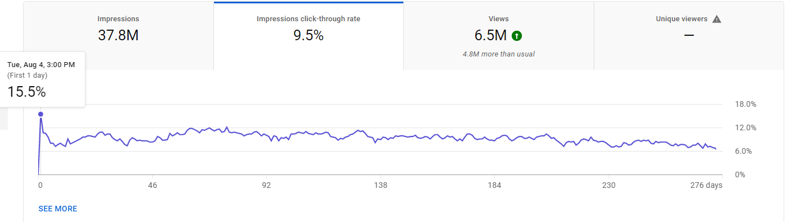

Click Through Rate
What Is It And How Do I Increase It?
Click Through Rate, or CTR, is a metric youtube uses to determine how often someone clicks on your video when it is reccommended to them. Currently, I would say that the click through rate of a video is more important than the watch time, however it is important to have both to get a viral video. On my channel, I usually get an average of about 12-13% after a week. Click through rate is usually significantly higer on the first days of the video being uploaded, as your regular viewers will click on the video more often, and the people who have notifications on for you will almost always watch the video. It is important to note that videos of current trends will often have an absurdly high click through rate while the trend is popular. Once the trend dies down, the click through rate goes down, having the video die with it. This is why there are often considered to be two different types of videos on youtube: trend riding videos or idea based videos. Trend riding videos, like the name suggests, ride off of trends. To have a long term viral video, it is important to have a simple yet intriguing thumbnail. Your thumbnail should be based off your audience; if they are younger you should go for very bright and eccentric colours, if they are young adults maybe something simpler but less bright would work. Here is a picture of the click through rate on my most viewed youtube video. I am hovering over the first day to show the steep drop in CTR.
